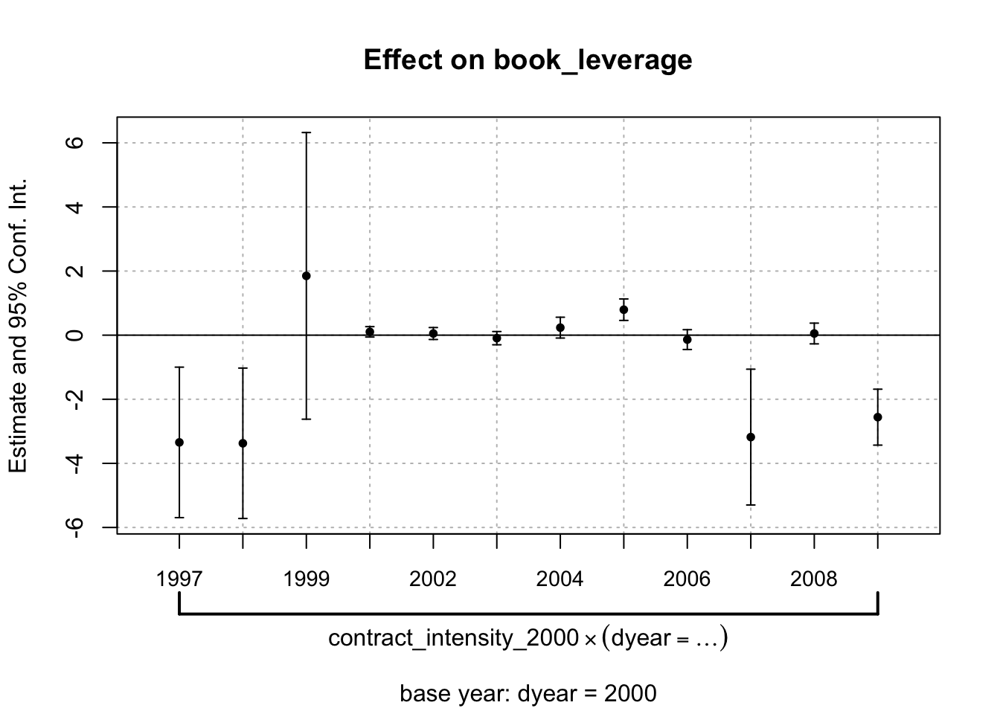

This analysis is suggested by discussant Samuel Antill in 2025 AFA meeting.
S1. Download and Load the Raw Dataset
We download the firm-level capital structure data from Compustat-CapitalIQ North America. The first measure of executory contracts is accounting data which (under U.S. GAAP) cover leases and rental contracts. We use the variables “Debt Equivalent of Operating Leases”, “Capital Leases” and “Net Rental Expenses”.
Debt - Capitalized Lease Obligations (dclo): This item represents long-term obligations due in respect of lease finances and hire purchase arrangements. This item includes:
Long-term finance lease obligations
Long-term lease financing
Long-term hire purchase obligations
Non-current obligations under capital leases
Rental Expense (xrent): This item represents all costs charged to operations for rental, lease, or hire of space and/or equipment. This item includes:
Airlines’ landing fees
Contingent rentals associated with capitalized leases
Lease charges and plant hire
This xrent variable is used in Section 5.1. In the main test, we construct a new variable called total rent, which is defined as the total rental commitment mrc1 + mrc2 + mrc3 + mrc4 + mrc5 + mrct reported in year t.
Asset - Total (at): Book value of total assets.
Debt in Current Liabilities - Total (dlc) is for the short-term debt and Long-term debt - Total (dltt) is for the long-term debt.
Earnings Before Interest (EBITDA): EBITDA.
Industry classifications: naics, sic and spcindcd + (Fama-French 30 Industry Classifiers, To Be Added / Definition).
We download all annual observations with Data Date (datadate) between Jan 2000 and Dec 2007. The period used in Samuel’s slides is between 2002 and 2007, which is after the doc.com bubble and after the GFC. The variables in the dataset are:
Show the code
## load the compustat_na data # compustat_na <- as_tibble(read.csv(file = "~/Library/CloudStorage/OneDrive-HandelshögskolaniStockholm/Projects_2024/BeckerJosephsonXu_2025/AFA_meeting_response/Data/sikefissene4sglp.csv") )compustat_na <-as_tibble(read.csv(file ="~/Library/CloudStorage/OneDrive-HandelshögskolaniStockholm/Projects_2024/BeckerJosephsonXu_2025/AFA_meeting_response/Data/g4f68dkn3beu1iag.csv") )## check the variable names cat("Variables include:\n\n")sort(names(compustat_na))
Two dependent variables are constructed to measure firm’s leverage: (cf. p18 and Table 2 of the paper)
Book leverage: we define leverage as the ratio of the sum of short-term debt and long-term debt to assets (we drop observations where this is outside the [0,1] range)*.
Debt/EBITDA: we define debt-to-EBITDA as the ratio of the long- and short-term debt to EBITDA (we drop observations where this is outside the [0,15] range)*.
*These restrictions are imposed only in analyses in Section 5.2.
Note 1
What should be the best way to construct this PV of Rent / Net Rental Expenses variable in this test?
The main independent variable in the test is executory contract intensity, which is named as contract_intensity in our dataset. We follow Samuel’s definition w/o purchase contracts information for firm i at year t:
Then, we construct the dataset for the difference-in-difference analysis.
In this section, we use all observations without missing values in subsequent analyses.
The original dataset (data) contains observations with data year (dyear) range in [1997, 2009] and we restrict the sample to the data year in [2002, 2007].
For results with restrictions on specific variables, please refer to Section 5.2.
Note 2
Does altering the time (i.e. 2000 to 1995) for measuring the treatment intensity alter the results?
s3.1. try-and-error with calender year dyear
In this section, we first try to use the year information dyear extracted from variable datadate as the periods.
On top of the base data, we add several new variables in dataset data_did:
contract_intensity_2000: the contract intensity for each firm in year dyear == 2000.
post_2005: an indicator equals to 1 if dyear > 2005 and 0 otherwise.
Show the code
data_firm <- data %>%filter(dyear ==2000) %>%# use `dyear` may create multiple observations for the same firm. E.g. filter(gvkey == 23535, dyear == 2005) select(gvkey, contract_intensity_2000 = contract_intensity) %>%group_by(gvkey) %>%summarise(contract_intensity_2000 =mean(contract_intensity_2000, na.rm =TRUE) ) %>%ungroup() FF_30ind <-as_tibble(read.csv(file ="~/Library/CloudStorage/OneDrive-HandelshögskolaniStockholm/Projects_2024/BeckerJosephsonXu_2025/AFA_meeting_response/Data/ff_30ind.csv"))data_did <- data %>%## merge the grouping variable left_join(y = data_firm, by =join_by(gvkey) ) %>%## merge the FF 30 industry classifiaction left_join(y = FF_30ind, by =join_by(sic)) %>%## pre- & post- mutate(indexyear = (dyear -2005), # year index with 2005 as base 0.post_2005 =ifelse(dyear >2005, yes =1, no =0) # whether it is after the 2005 reform ) # %>% # drop values outside the range:# mutate(# book_leverage = ifelse(test = (book_leverage >= 0 & book_leverage <= 1), yes = book_leverage, no = NA),# debt_ebitda = ifelse(test = (debt_ebitda >= 0 & debt_ebitda <= 15), yes = debt_ebitda, no = NA )# )
DiD Analysis:
Note 3
Q: Do we need to remove IPO and delisting firms?
Important 1: More Fixed-effects
Adding the industry-year fixed effects does not change the regression results.
Show the code
data_did %>%select(gvkey, dyear, contract_intensity_2000, post_2005, book_leverage, debt_ebitda, sic, ff_30ind_name) %>%filter(dyear >=2002& dyear <=2007) %>%# ## drop IPO and delisting firms # group_by(gvkey) %>% # mutate(# n_obs = n(), # number of observations for each firm # n_post = sum(post_2005, na.rm = TRUE) # number of obs after 2005# ) %>% # ungroup() %>% # filter(n_obs > n_post & n_post > 0) %>% ## clean variables mutate(gvkey =as.factor(gvkey), dyear =as.factor(dyear), ind =as.factor(ff_30ind_name), # industry ind_time =as.factor(paste(ff_30ind_name, dyear, sep =" + ")), group = contract_intensity_2000 >median(contract_intensity_2000, na.rm =TRUE) ) %>%na.omit() %>%## adding industry*year FE does not change the results: + ind_time fixest::feols(fml = book_leverage ~ contract_intensity_2000:post_2005 | gvkey + dyear, data = ., cluster =c("gvkey")) %>% fixest::etable()
In this section, we first try to use the year information fyear extracted from variable datadate as the periods.
On top of the base data, we add several new variables in dataset data_did:
contract_intensity_2000: the contract intensity for each firm in year fyear == 2000.
post_2005: an indicator equals to 1 if fyear > 2005 and 0 otherwise.
Show the code
data_firm <- data %>%filter(fyear ==2000) %>%# use `fyear` may create multiple observations for the same firm. E.g. filter(gvkey == 23535, dyear == 2005) select(gvkey, contract_intensity_2000 = contract_intensity) FF_30ind <-as_tibble(read.csv(file ="~/Library/CloudStorage/OneDrive-HandelshögskolaniStockholm/Projects_2024/BeckerJosephsonXu_2025/AFA_meeting_response/Data/ff_30ind.csv"))data_did <- data %>%## merge the grouping variable left_join(y = data_firm, by =join_by(gvkey) ) %>%## merge the FF 30 industry classifiaction left_join(y = FF_30ind, by =join_by(sic)) %>%## pre- & post- mutate(indexyear = (fyear -2005), # year index with 2005 as base 0.post_2005 =ifelse(fyear >2005, yes =1, no =0) # whether it is after the 2005 reform ) # %>%# drop values outside the range:# mutate(# book_leverage = ifelse(test = (book_leverage >= 0 & book_leverage <= 1), yes = book_leverage, no = NA),# debt_ebitda = ifelse(test = (debt_ebitda >= 0 & debt_ebitda <= 15), yes = debt_ebitda, no = NA )# )
We start by constructing industry-level information.
Show the code
data_firm <- data %>%filter(dyear ==2000) %>%# use `dyear` may create multiple observations for the same firm. E.g. filter(gvkey == 23535, dyear == 2005) select(gvkey, contract_intensity_2000 = contract_intensity) %>%group_by(gvkey) %>%summarise(contract_intensity_2000 =mean(contract_intensity_2000, na.rm =TRUE) ) %>%ungroup() FF_30ind <-as_tibble(read.csv(file ="~/Library/CloudStorage/OneDrive-HandelshögskolaniStockholm/Projects_2024/BeckerJosephsonXu_2025/AFA_meeting_response/Data/ff_30ind.csv"))## industry level measuresdata_did_ind <- data %>%## merge the grouping variable left_join(y = data_firm, by =join_by(gvkey) ) %>%## merge the FF 30 industry classifiaction left_join(y = FF_30ind, by =join_by(sic)) %>%select(gvkey, dyear, contract_intensity, book_leverage, debt_ebitda, sic, ff_30ind, ff_30ind_desc) %>%mutate(ff_30_ind_full =paste(ifelse(ff_30ind <10, yes =paste(" ", ff_30ind, sep =""), no =as.character(ff_30ind)), ff_30ind_desc, sep =": ") ) %>%## for each industry-year: group_by(dyear, ff_30_ind_full, ff_30ind, ff_30ind_desc) %>%summarise(contract_intensity_ind =median(contract_intensity, na.rm =TRUE), book_leverage_ind =median(book_leverage, na.rm =TRUE), debt_ebitda_ind =median(debt_ebitda, na.rm =TRUE) ) %>%ungroup() data_did_ind %>%filter(dyear ==2000& ff_30ind !=20) %>%arrange(-contract_intensity_ind) %>%select(-dyear, -ff_30_ind_full, `FF30 Code`= ff_30ind, # the industry code `Fama-French 30 Industry`= ff_30ind_desc, # name of the `Contract Intensity`= contract_intensity_ind, `Book Leverage`= book_leverage_ind, `Debt-to-EBITDA`= debt_ebitda_ind ) %>%gt(rowname_col ="FF30 Code" ) %>%fmt_number(columns =c(`Contract Intensity`, `Book Leverage`, `Debt-to-EBITDA`),decimals =3 ) %>%tab_header(title ="Table: Contract Intensity by Industry in 2000" ) %>%tab_style(style =cell_text(size ="small"), # Reduce font sizelocations =cells_body() )
Table: Contract Intensity by Industry in 2000
Fama-French 30 Industry
Contract Intensity
Book Leverage
Debt-to-EBITDA
28
Restaurants, Hotels, Motels
0.550
0.345
2.226
27
Retail
0.536
0.230
1.213
22
Personal and Business Services
0.188
0.057
0.000
25
Transportation
0.186
0.320
2.228
7
Apparel
0.157
0.265
0.857
5
Printing and Publishing
0.128
0.295
1.540
8
Healthcare, Medical Equipment, Pharmaceutical Products
0.124
0.091
0.000
30
Everything Else
0.113
0.275
0.000
23
Business Equipment
0.112
0.066
0.000
26
Wholesale
0.112
0.306
1.955
4
Recreation
0.106
0.361
1.090
18
Coal
0.095
0.343
3.411
6
Consumer Goods
0.087
0.285
1.389
10
Textiles
0.079
0.476
3.529
3
Tobacco Products
0.078
0.350
1.788
13
Fabricated Products and Machinery
0.078
0.258
1.302
21
Communication
0.077
0.369
1.069
16
Aircraft, ships, and railroad equipment
0.075
0.289
2.051
14
Electrical Equipment
0.071
0.215
0.523
1
Food Products
0.070
0.357
2.353
9
Chemicals
0.069
0.303
1.883
24
Business Supplies and Shipping Containers
0.067
0.357
2.439
2
Beer & Liquor
0.067
0.306
1.466
15
Automobiles and Trucks
0.065
0.318
2.437
11
Construction and Construction Materials
0.056
0.301
1.917
12
Steel Works Etc
0.049
0.314
2.859
29
Banking, Insurance, Real Estate, Trading
0.043
0.151
3.129
19
Petroleum and Natural Gas
0.029
0.232
0.819
17
Precious Metals, Non-Metallic, and Industrial Metal Mining
0.029
0.062
0.000
Show the code
## Plot the top and bottom parts: # data_did_ind %>% # ggplot(aes(x = dyear, y = contract_intensity_ind, colour = ff_30_ind_full)) + # geom_line() + # geom_point(aes(shape = ff_30_ind_full)) + # scale_x_continuous(n.breaks = 10, name = NULL)
Then, we perform DiD analysis using the industry-level contract intensity. The hypothesis in this test is that, after the option value of rejecting non-financial obligations decreases, the debt capacity of the firm also decreases. By replacing the contract intensity at the firm level by that at the industry level in 2000, we re-run the standard TWFE regression as in Section 3.
fixest::etable(## industry level difference-in-difference analysis## firm-level dependent variable: data %>%## merge the grouping variable left_join(y = data_firm, by =join_by(gvkey) ) %>%## merge the FF 30 industry classifiaction left_join(y = FF_30ind, by =join_by(sic)) %>%select(gvkey, dyear, book_leverage, debt_ebitda, sic, ff_30ind) %>%left_join(y =filter(data_did_ind, dyear ==2000) %>%`names<-`(value =str_replace(string =names(.),pattern ="_ind$",replacement ="_ind2000")) %>%select(-dyear), by =join_by(ff_30ind) ) %>%filter(dyear >=2002& dyear <=2007) %>%mutate(post_2005 =ifelse(dyear >2005, yes =1, no =0), # whether it is after the 2005 reformgvkey =as.factor(gvkey), dyear =as.factor(dyear), ind =as.factor(ff_30ind), # industry ind_time =as.factor(paste(ff_30_ind_full, dyear, sep =" + ")) ) %>%na.omit() %>% fixest::feols(fml = book_leverage ~ contract_intensity_ind2000:post_2005 | gvkey + dyear, data = ., cluster =c("gvkey")), ## industry-level dependent variable data_did_ind %>%filter(dyear >=2002& dyear <=2007) %>%left_join(y =filter(data_did_ind, dyear ==2000) %>%select(-ff_30_ind_full, -ff_30ind_desc) %>%`names<-`(value =str_replace(string =names(.),pattern ="_ind$",replacement ="_ind2000")) %>%select(-dyear), by =join_by(ff_30ind) ) %>%mutate(post_2005 =ifelse(dyear >2005, yes =1, no =0), # whether it is after the 2005 reformff_30ind =as.factor(ff_30ind), dyear =as.factor(dyear) ) %>%na.omit() %>% fixest::feols(fml = book_leverage_ind ~ contract_intensity_ind2000:post_2005 | ff_30ind + dyear, data = ., cluster =c("ff_30ind"))) %>% knitr::kable(format ="html", caption ="DiD Results with Industry-level Contract Intensity", col.names =c("", paste("(", 1:2, ")", sep =""))) %>% kableExtra::kable_styling(font_size =8, # Smaller font (default is 16px)full_width =FALSE, # Table width fits content bootstrap_options =c("striped", "condensed") )
DiD Results with Industry-level Contract Intensity
(1)
(2)
Dependent Var.:
book_leverage
book_leverage_ind
contract_intensity_ind2000 x post_2005
0.9765 (1.212)
0.0520* (0.0221)
Fixed-Effects:
--------------
-----------------
gvkey
Yes
No
dyear
Yes
Yes
ff_30ind
No
Yes
______________________________________
______________
_________________
S.E.: Clustered
by: gvkey
by: ff_30ind
Observations
56,367
180
R2
0.43035
0.93635
Within R2
3.43e-6
0.01455
However, the results show that the industry level evidence is not significant to support the hypothesis. In the regressions using industry-level contact intensities in year 2000 for grouping, the dependent variable is firm level book leverage in regression (1) and industry level median book leverage in regression (2). The coefficient estimates of the interaction term are both positive, which is the opposite of our main regressions. This indicates that the industry-level intensity may not be a good measure for our firm level analysis in Section 3.
Appendix
Here are additional tests results with alternative specifications.
A1. Results using different measures of “Net Rental Expenses”
In this part of the analysis, I use the definition of “Net Rental Expenses” in our paper, namely
A1.1. try-and-error with calender year dyear
In this section, we first try to use the year information dyear extracted from variable datadate as the periods.
On top of the base data, we add several new variables in dataset data_did:
contract_intensity_2000: the contract intensity for each firm in year dyear == 2000.
post_2005: an indicator equals to 1 if dyear > 2005 and 0 otherwise.
Show the code
data_firm <- data %>%filter(dyear ==2000) %>%# use `dyear` may create multiple observations for the same firm. E.g. filter(gvkey == 23535, dyear == 2005) select(gvkey, contract_intensity_2000 = contract_intensity) %>%group_by(gvkey) %>%summarise(contract_intensity_2000 =mean(contract_intensity_2000, na.rm =TRUE) ) %>%ungroup() FF_30ind <-as_tibble(read.csv(file ="~/Library/CloudStorage/OneDrive-HandelshögskolaniStockholm/Projects_2024/BeckerJosephsonXu_2025/AFA_meeting_response/Data/ff_30ind.csv"))data_did <- data %>%## merge the grouping variable left_join(y = data_firm, by =join_by(gvkey) ) %>%## merge the FF 30 industry classifiaction left_join(y = FF_30ind, by =join_by(sic)) %>%## pre- & post- mutate(indexyear = (dyear -2005), # year index with 2005 as base 0.post_2005 =ifelse(dyear >2005, yes =1, no =0) # whether it is after the 2005 reform ) # %>% # drop values outside the range:# mutate(# book_leverage = ifelse(test = (book_leverage >= 0 & book_leverage <= 1), yes = book_leverage, no = NA),# debt_ebitda = ifelse(test = (debt_ebitda >= 0 & debt_ebitda <= 15), yes = debt_ebitda, no = NA )# )
In this section, we first try to use the year information fyear extracted from variable datadate as the periods.
On top of the base data, we add several new variables in dataset data_did:
contract_intensity_2000: the contract intensity for each firm in year fyear == 2000.
post_2005: an indicator equals to 1 if fyear > 2005 and 0 otherwise.
Show the code
data_firm <- data %>%filter(fyear ==2000) %>%# use `fyear` may create multiple observations for the same firm. E.g. filter(gvkey == 23535, dyear == 2005) select(gvkey, contract_intensity_2000 = contract_intensity) FF_30ind <-as_tibble(read.csv(file ="~/Library/CloudStorage/OneDrive-HandelshögskolaniStockholm/Projects_2024/BeckerJosephsonXu_2025/AFA_meeting_response/Data/ff_30ind.csv"))data_did <- data %>%## merge the grouping variable left_join(y = data_firm, by =join_by(gvkey) ) %>%## merge the FF 30 industry classifiaction left_join(y = FF_30ind, by =join_by(sic)) %>%## pre- & post- mutate(indexyear = (fyear -2005), # year index with 2005 as base 0.post_2005 =ifelse(fyear >2005, yes =1, no =0) # whether it is after the 2005 reform ) # %>% # drop values outside the range:# mutate(# book_leverage = ifelse(test = (book_leverage >= 0 & book_leverage <= 1), yes = book_leverage, no = NA),# debt_ebitda = ifelse(test = (debt_ebitda >= 0 & debt_ebitda <= 15), yes = debt_ebitda, no = NA )# )
Compare to results in Section 3.1, the coefficient estimate on the treatment in Section 5.2 not only becomes insignificant, but also changes the direction of the impact.
A3. Sensitivity Analysis of Choosing 2000
In this subsection, we examine how sensitive the coefficient estimate is with respect to changes in the base year for determining the contract intensity of a firm. We still use dyear as the year variable.
Show the code
data_firm_wide <- data %>%select(dyear, gvkey, contract_intensity) %>%group_by(dyear, gvkey) %>%summarise(contract_intensity =mean(contract_intensity, na.rm =TRUE) ) %>%ungroup() %>%filter(dyear <2002) %>%pivot_wider(names_from = dyear, values_from = contract_intensity) %>%rename_with(.fn =~ifelse(grepl(pattern ="\\d{4}", x = .x), paste0("contract_intensity_", .x), no = .x) )data_did_wide <- data %>%## merge the grouping variable left_join(y = data_firm_wide, by =join_by(gvkey) ) %>%## merge the FF 30 industry classifiaction left_join(y = FF_30ind, by =join_by(sic)) %>%## pre- & post- mutate(indexyear = (dyear -2005), # year index with 2005 as base 0.post_2005 =ifelse(dyear >2005, yes =1, no =0) # whether it is after the 2005 reform )
We construct a series of new column variables under the name of contract_intensity_[year] with dyear < 2002.
DiD Analysis:
Show the code
reg_contract_intensity_list <-list(); for (contract_base innames(data_firm_wide)[-1] ) {## format the regression reg_raw_year <-as.formula(paste("book_leverage ~ ", contract_base, ":post_2005 | gvkey + dyear", sep ="")) ## use different base year(s) reg_year <- data_did_wide %>%select(gvkey, dyear, post_2005, book_leverage, debt_ebitda, sic, ff_30ind_name, (!!sym(contract_base)) ) %>%filter(dyear >=2002& dyear <=2007) %>%mutate(gvkey =as.factor(gvkey), dyear =as.factor(dyear) ) %>%na.omit() %>% fixest::feols(fml = reg_raw_year, data = ., cluster =c("gvkey")) reg_contract_intensity_list[[contract_base]] <- reg_yearassign(x =paste("reg_", contract_base, sep =""), reg_year) } ## change the name of each did regressions: names(reg_contract_intensity_list) <-str_replace_all(string =names(reg_contract_intensity_list), pattern ="contract_intensity_", replacement ="base: dyear=")etable(reg_contract_intensity_list, vcov ="cluster") %>% knitr::kable(format ="html", caption ="DiD Results with Different Base Year for Contract Intensity") %>% kableExtra::kable_styling(font_size =8, # Smaller font (default is 16px)full_width =FALSE, # Table width fits content bootstrap_options =c("striped", "condensed") )
DiD Results with Different Base Year for Contract Intensity
From the regression results, we can see that the treatment effect remains negatively statistically significant at 1% level, if we choose 1999 or 2001 as the base year to measure the contract intensity characteristic of a firm. Choosing years before 1999 will make the treatment effect insignificant. This is understandable as firms characteristics before 1999 may not be a good measure for its characteristics between 2002 and 2007. Our results are robust to most of adjustments in the standard errors. In the base tests, results are invariant when we cluster standard errors at the firm level and also at both the firm and year level.
However, the results are no longer significant when we use the heteroscedasticity-robust (HC1) corrected standard errors, even when using 2000 as the base year for contract_intensity. See the regression results below:
Show the code
etable(reg_contract_intensity_list, vcov ="HC1") %>% knitr::kable(format ="html", caption ="DiD Results with Different Base Years for Contract Intensity") %>% kableExtra::kable_styling(font_size =8, # Smaller font (default is 16px)full_width =FALSE, # Table width fits content bootstrap_options =c("striped", "condensed") )
DiD Results with Different Base Years for Contract Intensity
base: dye..1997
base: dyear=1998
base: dy..1999
base: dyear=2000
base: dyear=2001
Dependent Var.:
book_leverage
book_leverage
book_leverage
book_leverage
book_leverage
contract_intensity_1997 x post_2005
0.0578 (0.2788)
contract_intensity_1998 x post_2005
-0.0003 (0.0005)
contract_intensity_1999 x post_2005
-1.777 (1.292)
contract_intensity_2000 x post_2005
-0.4176. (0.2322)
contract_intensity_2001 x post_2005
-0.4575 (0.2993)
Fixed-Effects:
---------------
----------------
--------------
-----------------
----------------
gvkey
Yes
Yes
Yes
Yes
Yes
dyear
Yes
Yes
Yes
Yes
Yes
___________________________________
_______________
________________
______________
_________________
________________
S.E. type
Heteroske.-rob.
Heterosked.-rob.
Heterosk.-rob.
Heteroskeda.-rob.
Heterosked.-rob.
Observations
20,116
22,302
25,174
27,408
29,180
R2
0.33133
0.51772
0.52367
0.39582
0.31546
Within R2
7.02e-7
1.04e-7
0.00430
0.00334
0.00288
The numbers in this test, however, are closer to the ones in Samuel’s slides.
In the last part, we re-run all analyses using fyear as the year variable.
Show the code
## data prep: data_firm_wide_fyear <- data %>%select(fyear, gvkey, contract_intensity) %>%filter(fyear <2002) %>%pivot_wider(names_from = fyear, values_from = contract_intensity) %>%rename_with(.fn =~ifelse(grepl(pattern ="\\d{4}", x = .x), paste0("contract_intensity_", .x), no = .x) )data_did_wide_fyear <- data %>%## merge the grouping variable left_join(y = data_firm_wide_fyear, by =join_by(gvkey) ) %>%## merge the FF 30 industry classifiaction left_join(y = FF_30ind, by =join_by(sic)) %>%## pre- & post- mutate(indexyear = (fyear -2005), # year index with 2005 as base 0.post_2005 =ifelse(fyear >2005, yes =1, no =0) # whether it is after the 2005 reform ) ## did reg: reg_contract_intensity_list_fyear <-list(); for (contract_base innames(data_firm_wide)[-1] ) {## format the regression reg_raw_year <-as.formula(paste("book_leverage ~ ", contract_base, ":post_2005 | gvkey + fyear", sep ="")) ## use different base year(s) reg_year <- data_did_wide %>%select(gvkey, fyear, post_2005, book_leverage, debt_ebitda, sic, ff_30ind_name, (!!sym(contract_base)) ) %>%filter(fyear >=2002& fyear <=2007) %>%mutate(gvkey =as.factor(gvkey), fyear =as.factor(fyear) ) %>%na.omit() %>% fixest::feols(fml = reg_raw_year, data = ., cluster =c("gvkey")) reg_contract_intensity_list_fyear[[contract_base]] <- reg_yearassign(x =paste("reg_", contract_base, sep =""), reg_year) } ## change the name of each did regressions: names(reg_contract_intensity_list_fyear) <-str_replace_all(string =names(reg_contract_intensity_list_fyear), pattern ="contract_intensity_", replacement ="base: fyear=")print("SE clustered at firm level: \n")
[1] "SE clustered at firm level: \n"
Show the code
etable(reg_contract_intensity_list_fyear, cluster =c("gvkey")) %>% knitr::kable(format ="html", caption ="DiD Results with Different Base Year for Contract Intensity") %>% kableExtra::kable_styling(font_size =8, # Smaller font (default is 16px)full_width =FALSE, # Table width fits content bootstrap_options =c("striped", "condensed") )
DiD Results with Different Base Year for Contract Intensity
base: fye..1997
base: fyear=1998
base: fyear=1999
base: fyear=2000
base: fyear=2001
Dependent Var.:
book_leverage
book_leverage
book_leverage
book_leverage
book_leverage
contract_intensity_1997 x post_2005
0.0105 (0.2699)
contract_intensity_1998 x post_2005
-0.0003 (0.0005)
contract_intensity_1999 x post_2005
-1.760*** (0.2817)
contract_intensity_2000 x post_2005
-0.4231*** (0.1092)
contract_intensity_2001 x post_2005
-0.4682*** (0.0177)
Fixed-Effects:
---------------
----------------
------------------
-------------------
-------------------
gvkey
Yes
Yes
Yes
Yes
Yes
fyear
Yes
Yes
Yes
Yes
Yes
___________________________________
_______________
________________
__________________
___________________
___________________
S.E.: Clustered
by: gvkey
by: gvkey
by: gvkey
by: gvkey
by: gvkey
Observations
19,871
22,041
24,869
27,069
28,820
R2
0.33521
0.52114
0.51103
0.30295
0.26543
Within R2
2.48e-8
1.16e-7
0.00429
0.00111
0.00075
Show the code
print("HC1 robust SE: \n")
[1] "HC1 robust SE: \n"
Show the code
etable(reg_contract_intensity_list_fyear, vcov ="HC1") %>% knitr::kable(format ="html", caption ="DiD Results with Different Base Year for Contract Intensity") %>% kableExtra::kable_styling(font_size =8, # Smaller font (default is 16px)full_width =FALSE, # Table width fits content bootstrap_options =c("striped", "condensed") )
DiD Results with Different Base Year for Contract Intensity
base: fye..1997
base: fyear=1998
base: fy..1999
base: fyear=2000
base: fyear=2001
Dependent Var.:
book_leverage
book_leverage
book_leverage
book_leverage
book_leverage
contract_intensity_1997 x post_2005
0.0105 (0.2616)
contract_intensity_1998 x post_2005
-0.0003 (0.0005)
contract_intensity_1999 x post_2005
-1.760 (1.279)
contract_intensity_2000 x post_2005
-0.4231. (0.2336)
contract_intensity_2001 x post_2005
-0.4682 (0.2991)
Fixed-Effects:
---------------
----------------
--------------
-----------------
----------------
gvkey
Yes
Yes
Yes
Yes
Yes
fyear
Yes
Yes
Yes
Yes
Yes
___________________________________
_______________
________________
______________
_________________
________________
S.E. type
Heteroske.-rob.
Heterosked.-rob.
Heterosk.-rob.
Heteroskeda.-rob.
Heterosked.-rob.
Observations
19,871
22,041
24,869
27,069
28,820
R2
0.33521
0.52114
0.51103
0.30295
0.26543
Within R2
2.48e-8
1.16e-7
0.00429
0.00111
0.00075
In this case, with HC1 standard errors (same as the default in STATA: robust), only the coefficient using 2000 contract intensity is significant at 10% level, which is very close to the results in Samuel’s slides.
Note 4
The reason for not using two-way clustering is that there are only 6 clusters at the time dimension. Fewer than 10–20 clusters in a dimension can lead to biased standard errors (Cameron & Miller, 2015). With 6 years, two-way clustering would produce unreliable results.
A4. Restrict to Firms w/o Missing Values
Show the code
data_firm <- data %>%filter(dyear ==2000) %>%# use `dyear` may create multiple observations for the same firm. E.g. filter(gvkey == 23535, dyear == 2005) select(gvkey, contract_intensity_2000 = contract_intensity) %>%group_by(gvkey) %>%summarise(contract_intensity_2000 =mean(contract_intensity_2000, na.rm =TRUE) ) %>%ungroup() FF_30ind <-as_tibble(read.csv(file ="~/Library/CloudStorage/OneDrive-HandelshögskolaniStockholm/Projects_2024/BeckerJosephsonXu_2025/AFA_meeting_response/Data/ff_30ind.csv"))data_did <- data %>%## merge the grouping variable left_join(y = data_firm, by =join_by(gvkey) ) %>%## merge the FF 30 industry classifiaction left_join(y = FF_30ind, by =join_by(sic)) %>%## pre- & post- mutate(indexyear = (dyear -2005), # year index with 2005 as base 0.post_2005 =ifelse(dyear >2005, yes =1, no =0) # whether it is after the 2005 reform ) # %>% # drop values outside the range:# mutate(# book_leverage = ifelse(test = (book_leverage >= 0 & book_leverage <= 1), yes = book_leverage, no = NA),# debt_ebitda = ifelse(test = (debt_ebitda >= 0 & debt_ebitda <= 15), yes = debt_ebitda, no = NA )# )
If we drop IPO and delisting firms from the sample, the results are as follows:
Show the code
data_did %>%select(gvkey, dyear, contract_intensity_2000, post_2005, book_leverage, debt_ebitda, sic, ff_30ind_name) %>%filter(dyear >=2002& dyear <=2007) %>%## drop IPO and delisting firmsgroup_by(gvkey) %>%mutate(n_obs =n(), # number of observations for each firmn_post =sum(post_2005, na.rm =TRUE) # number of obs after 2005 ) %>%ungroup() %>%filter(n_obs > n_post & n_post >0) %>%# clean variablesmutate(gvkey =as.factor(gvkey), dyear =as.factor(dyear), ind =as.factor(ff_30ind_name), # industry ind_time =as.factor(paste(ff_30ind_name, dyear, sep =" + ")), group = contract_intensity_2000 >median(contract_intensity_2000, na.rm =TRUE) ) %>%na.omit() %>%## adding industry*year FE does not change the results: + ind_time fixest::feols(fml = book_leverage ~ contract_intensity_2000:post_2005 | gvkey + dyear, data = ., cluster =c("gvkey")) %>% fixest::etable()
data_did %>%select(gvkey, dyear, contract_intensity_2000, post_2005, indexyear, book_leverage, debt_ebitda, sic, ff_30ind_name) %>%# filter(fyear >= 2002 & fyear <= 2007) %>% group_by(gvkey) %>%mutate(n_obs =sum(dyear >=2002& dyear <=2007), # number of observations for each firmn_post =sum(post_2005, na.rm =TRUE) # number of obs after 2005 ) %>%ungroup() %>%filter(n_obs ==6) %>%mutate(gvkey =as.factor(gvkey), dyear =as.factor(dyear), indexyear =relevel(factor(indexyear), ref ="0") ) %>%na.omit() %>% fixest::feols(fml = book_leverage ~i(dyear, contract_intensity_2000, 2000) | gvkey + dyear, data = ., cluster =c("gvkey")) %>% fixest::coefplot(sub ="base year: dyear = 2000")

The results are robust to the sample selection.
Source Code
---title: "Non-financial Liabilities and Restructuring" subtitle: "Empirical support in 2005" author: "Hongyi Xu"date: "January 10, 2025"date-modified: last-modifiedformat: html: theme: flatly toc: true code-fold: true code-tools: true code-summary: "Show the code" html-math-method: katex toc-location: left code-block-bg: true code-block-border-left: "#31BAE9" execute: output: trueeditor: visualeditor_options: chunk_output_type: console---<style type="text/css">body, td {font-size:16px;}code.r{font-size:12px;}pre { /* For appearance of output blocks */font-size:12px;background-color:#f0f0f0;/* Light grey background */padding:5px; <!--border-radius:5px;/* border corner */-->} .gt_table.gt_caption {font-size:16px;display:flex;justify-content:space-between;align-items:center;}</style>```{r setup, include=FALSE}knitr::opts_chunk$set(echo = TRUE)library(haven) library(tidyverse) library(ggplot2) library(scales) library(gt)library(fixest)library(patchwork)library(DiagrammeR)setwd("~/Library/CloudStorage/OneDrive-HandelshögskolaniStockholm/Projects_2024/BeckerJosephsonXu_2025/AFA_meeting_response")# setwd("C:/Users/13613/OneDrive - Handelshögskolan i Stockholm/MAR_2024/R")```::: callout-important#### This analysis is suggested by discussant Samuel Antill in 2025 AFA meeting.:::## S1. Download and Load the Raw Dataset {#sec-s1-raw-dataset}We download the firm-level capital structure data from Compustat-CapitalIQ North America. The first measure of executory contracts is accounting data which (under U.S. GAAP) cover leases and rental contracts. We use the variables “Debt Equivalent of Operating Leases”, “Capital Leases” and “Net Rental Expenses”.- `Debt - Capitalized Lease Obligations (dclo)`: This item represents long-term obligations due in respect of lease finances and hire purchase arrangements. This item includes: - Long-term finance lease obligations - Long-term lease financing - Long-term hire purchase obligations - Non-current obligations under capital leases- `Rental Expense (xrent)`: This item represents all costs charged to operations for rental, lease, or hire of space and/or equipment. This item includes: - Airlines' landing fees - Contingent rentals associated with capitalized leases - Lease charges and plant hire This `xrent` variable is used in @sec-a1-different-measures-of-net-rental-expenses. In the main test, we construct a new variable called `total rent`, which is defined as the total rental commitment `mrc1 + mrc2 + mrc3 + mrc4 + mrc5 + mrct` reported in year $t$.- `Asset - Total (at)`: Book value of total assets.- `Debt in Current Liabilities - Total (dlc)` is for the short-term debt and `Long-term debt - Total (dltt)` is for the long-term debt.- `Earnings Before Interest (EBITDA)`: EBITDA.- Industry classifications: `naics`, `sic` and `spcindcd` + (Fama-French 30 Industry Classifiers, <mark>[To Be Added](https://github.com/Wenzhi-Ding/FamaFrenchIndustry) / [Definition](https://mba.tuck.dartmouth.edu/pages/faculty/ken.french/Data_Library/det_30_ind_port.html)</mark>).We download all annual observations with `Data Date (datadate)` between Jan 2000 and Dec 2007. The period used in Samuel's slides is between 2002 and 2007, which is after the doc.com bubble and after the GFC. The variables in the dataset are:```{r s1-load-data, echo=TRUE, results='hold'}## load the compustat_na data # compustat_na <- as_tibble(read.csv(file = "~/Library/CloudStorage/OneDrive-HandelshögskolaniStockholm/Projects_2024/BeckerJosephsonXu_2025/AFA_meeting_response/Data/sikefissene4sglp.csv") )compustat_na <- as_tibble(read.csv(file = "~/Library/CloudStorage/OneDrive-HandelshögskolaniStockholm/Projects_2024/BeckerJosephsonXu_2025/AFA_meeting_response/Data/g4f68dkn3beu1iag.csv") )## check the variable names cat("Variables include:\n\n")sort(names(compustat_na))```## S2. Data Cleaning and Prep {#sec-s2-clean-prep}Two dependent variables are constructed to measure firm's leverage: (<u>cf. p18 and Table 2 of the paper</u>)- `Book leverage`: we define leverage as the ratio of the sum of short-term debt and long-term debt to assets (we drop observations where this is outside the \[0,1\] range)\*.- `Debt/EBITDA`: we define debt-to-EBITDA as the ratio of the long- and short-term debt to EBITDA (we drop observations where this is outside the \[0,15\] range)\*.\*<mark>These restrictions are imposed only in analyses in @sec-a2-results-using-data-filters-in-the-main-paper.<mark>::: {#nte-rent-var .callout-note .column-margin}What should be the best way to construct this <mark>PV of Rent / Net Rental Expenses</mark> variable in this test?:::```{r s2-clean-prep, echo=TRUE, results='hold'}## create leverage variables data <- compustat_na %>% filter(indfmt == "INDL") %>% ## remove all financial firms mutate( ## leverage variables: book_leverage = (dlc + dltt) / at, debt_ebitda = (dlc + dltt) / ebitda, ## treatment intensity: totalrent = mrc1 + mrc2 + mrc3 + mrc4 + mrc5 + mrct, # total rent w/o discount # contract_intensity = (dclo + xrent * 3) / at, # executory contract intensity contract_intensity = (dclo + totalrent) / at, # executory contract intensity ## other variables: dyear = as.integer(substr(datadate, start = 1, stop = 4)) # data year ) ## record the variable names cat("Variables include:\n\n")sort(names(data)) ```The main independent variable in the test is executory contract intensity, which is named as `contract_intensity` in our dataset. We follow Samuel's definition w/o purchase contracts information for firm $i$ at year $t$:\begin{equation}\begin{split}& \text{Executory Contract Intensity}_{i,t} = \frac{\text{Capitalized Leases}_{i,t} + \text{PV of Rent}_{i,t} }{\text{Book Asset}_{i,t}} \\& \Rightarrow \text{contract\_intensity}_{i,t} = \begin{cases}\frac{\text{dclo}_{i,t} + \text{xrent}_{i,t} \times 3 }{\text{at}_{i,t}} \\\frac{\text{dclo}_{i,t} + \text{totalrent}_{i,t} }{\text{at}_{i,t}}\\\end{cases}, \\& \quad \text{ with totalrent = mrc1 + mrc2 + mrc3 + mrc4 + mrc5 + mrct} \\\end{split}\end{equation}## S3. Difference-in-Difference Examination {#sec-s3-difference-in-difference-examination}Then, we construct the dataset for the difference-in-difference analysis.In this section, we use all observations without missing values in subsequent analyses.The original dataset (`data`) contains observations with data year (`dyear`) range in `r paste("[", paste(range(data$dyear, na.rm = TRUE), collapse = ", "), "]", sep = "")` and we restrict the sample to the data year in \[2002, 2007\].For results with restrictions on specific variables, please refer to @sec-a2-results-using-data-filters-in-the-main-paper.::: {#nte-group-def .callout-note .column-margin}Does altering the time (i.e. 2000 to 1995) for measuring the treatment intensity alter the results?:::### s3.1. try-and-error with calender year `dyear` {#sec-s3a-try-and-error-with-calender-year-dyear}In this section, we first try to use the year information `dyear` extracted from variable `datadate` as the periods.On top of the base `data`, we add several new variables in dataset `data_did`:- `contract_intensity_2000`: the contract intensity for each firm in year `dyear == 2000`.- `post_2005`: an indicator equals to 1 if `dyear > 2005` and 0 otherwise.```{r s3a-did-data, echo=TRUE, results='hold'}data_firm <- data %>% filter(dyear == 2000) %>% # use `dyear` may create multiple observations for the same firm. E.g. filter(gvkey == 23535, dyear == 2005) select(gvkey, contract_intensity_2000 = contract_intensity) %>% group_by(gvkey) %>% summarise(contract_intensity_2000 = mean(contract_intensity_2000, na.rm = TRUE) ) %>% ungroup() FF_30ind <- as_tibble(read.csv(file = "~/Library/CloudStorage/OneDrive-HandelshögskolaniStockholm/Projects_2024/BeckerJosephsonXu_2025/AFA_meeting_response/Data/ff_30ind.csv"))data_did <- data %>% ## merge the grouping variable left_join(y = data_firm, by = join_by(gvkey) ) %>% ## merge the FF 30 industry classifiaction left_join(y = FF_30ind, by = join_by(sic)) %>% ## pre- & post- mutate( indexyear = (dyear - 2005), # year index with 2005 as base 0. post_2005 = ifelse(dyear > 2005, yes = 1, no = 0) # whether it is after the 2005 reform ) # %>% # drop values outside the range: # mutate( # book_leverage = ifelse(test = (book_leverage >= 0 & book_leverage <= 1), yes = book_leverage, no = NA), # debt_ebitda = ifelse(test = (debt_ebitda >= 0 & debt_ebitda <= 15), yes = debt_ebitda, no = NA ) # ) ```DiD Analysis:::: {#nte-ipo-delist .callout-note .column-margin}Q: Do we need to remove IPO and delisting firms?:::::: {#imp-ipo-delist .callout-important .column-margin}## More Fixed-effects Adding the industry-year fixed effects does not change the regression results. :::```{r s3-did-test, echo=TRUE, warning=FALSE, message=FALSE}data_did %>% select(gvkey, dyear, contract_intensity_2000, post_2005, book_leverage, debt_ebitda, sic, ff_30ind_name) %>% filter(dyear >= 2002 & dyear <= 2007) %>% # ## drop IPO and delisting firms # group_by(gvkey) %>% # mutate( # n_obs = n(), # number of observations for each firm # n_post = sum(post_2005, na.rm = TRUE) # number of obs after 2005 # ) %>% # ungroup() %>% # filter(n_obs > n_post & n_post > 0) %>% ## clean variables mutate( gvkey = as.factor(gvkey), dyear = as.factor(dyear), ind = as.factor(ff_30ind_name), # industry ind_time = as.factor(paste(ff_30ind_name, dyear, sep = " + ")), group = contract_intensity_2000 > median(contract_intensity_2000, na.rm = TRUE) ) %>% na.omit() %>% ## adding industry*year FE does not change the results: + ind_time fixest::feols(fml = book_leverage ~ contract_intensity_2000:post_2005 | gvkey + dyear, data = ., cluster = c("gvkey")) %>% fixest::etable()data_did %>% select(gvkey, dyear, contract_intensity_2000, post_2005, indexyear, book_leverage, debt_ebitda, sic, ff_30ind_name) %>% # filter(fyear >= 2002 & fyear <= 2007) %>% mutate( gvkey = as.factor(gvkey), dyear = as.factor(dyear), indexyear = relevel(factor(indexyear), ref = "0") ) %>% na.omit() %>% fixest::feols(fml = book_leverage ~ i(dyear, contract_intensity_2000, 2000) | gvkey + dyear, data = ., cluster = c("gvkey")) %>% fixest::coefplot(sub = "base year: dyear = 2000") ```### s3.2. try-and-error with calender year `fyear` {#sec-s3b-try-and-error-with-calender-year-fyear}In this section, we first try to use the year information `fyear` extracted from variable `datadate` as the periods.On top of the base `data`, we add several new variables in dataset `data_did`:- `contract_intensity_2000`: the contract intensity for each firm in year `fyear == 2000`.- `post_2005`: an indicator equals to 1 if `fyear > 2005` and 0 otherwise.```{r s3b-did-data, echo=TRUE, results='hold'}data_firm <- data %>% filter(fyear == 2000) %>% # use `fyear` may create multiple observations for the same firm. E.g. filter(gvkey == 23535, dyear == 2005) select(gvkey, contract_intensity_2000 = contract_intensity) FF_30ind <- as_tibble(read.csv(file = "~/Library/CloudStorage/OneDrive-HandelshögskolaniStockholm/Projects_2024/BeckerJosephsonXu_2025/AFA_meeting_response/Data/ff_30ind.csv"))data_did <- data %>% ## merge the grouping variable left_join(y = data_firm, by = join_by(gvkey) ) %>% ## merge the FF 30 industry classifiaction left_join(y = FF_30ind, by = join_by(sic)) %>% ## pre- & post- mutate( indexyear = (fyear - 2005), # year index with 2005 as base 0. post_2005 = ifelse(fyear > 2005, yes = 1, no = 0) # whether it is after the 2005 reform ) # %>% # drop values outside the range: # mutate( # book_leverage = ifelse(test = (book_leverage >= 0 & book_leverage <= 1), yes = book_leverage, no = NA), # debt_ebitda = ifelse(test = (debt_ebitda >= 0 & debt_ebitda <= 15), yes = debt_ebitda, no = NA ) # )```DiD Analysis:```{r s3b-did-test, echo=TRUE, warning=FALSE, message=FALSE}data_did %>% select(gvkey, fyear, contract_intensity_2000, post_2005, book_leverage, debt_ebitda, sic, ff_30ind_name) %>% filter(fyear >= 2002 & fyear <= 2007) %>% mutate( gvkey = as.factor(gvkey), fyear = as.factor(fyear), group = contract_intensity_2000 > median(contract_intensity_2000, na.rm = TRUE) ) %>% na.omit() %>% fixest::feols(fml = book_leverage ~ contract_intensity_2000:post_2005 | gvkey + fyear, data = ., cluster = c("gvkey")) %>% fixest::etable()data_did %>% select(gvkey, fyear, contract_intensity_2000, post_2005, indexyear, book_leverage, debt_ebitda, sic, ff_30ind_name) %>% # filter(fyear >= 2002 & fyear <= 2007) %>% mutate( gvkey = as.factor(gvkey), fyear = as.factor(fyear), indexyear = relevel(factor(indexyear), ref = "0") ) %>% na.omit() %>% fixest::feols(fml = book_leverage ~ i(fyear, contract_intensity_2000, 2000) | gvkey + fyear, data = ., cluster = c("gvkey")) %>% fixest::coefplot(sub = "base year: fyear = 2000") ```## S4. Industry Level DiD {#sec-s4-industry-level-did}We start by constructing industry-level information.```{r s4-industry-data, echo=TRUE, message=FALSE, warning=FALSE}data_firm <- data %>% filter(dyear == 2000) %>% # use `dyear` may create multiple observations for the same firm. E.g. filter(gvkey == 23535, dyear == 2005) select(gvkey, contract_intensity_2000 = contract_intensity) %>% group_by(gvkey) %>% summarise(contract_intensity_2000 = mean(contract_intensity_2000, na.rm = TRUE) ) %>% ungroup() FF_30ind <- as_tibble(read.csv(file = "~/Library/CloudStorage/OneDrive-HandelshögskolaniStockholm/Projects_2024/BeckerJosephsonXu_2025/AFA_meeting_response/Data/ff_30ind.csv"))## industry level measuresdata_did_ind <- data %>% ## merge the grouping variable left_join(y = data_firm, by = join_by(gvkey) ) %>% ## merge the FF 30 industry classifiaction left_join(y = FF_30ind, by = join_by(sic)) %>% select(gvkey, dyear, contract_intensity, book_leverage, debt_ebitda, sic, ff_30ind, ff_30ind_desc) %>% mutate(ff_30_ind_full = paste(ifelse(ff_30ind < 10, yes = paste(" ", ff_30ind, sep = ""), no = as.character(ff_30ind)), ff_30ind_desc, sep = ": ") ) %>% ## for each industry-year: group_by(dyear, ff_30_ind_full, ff_30ind, ff_30ind_desc) %>% summarise( contract_intensity_ind = median(contract_intensity, na.rm = TRUE), book_leverage_ind = median(book_leverage, na.rm = TRUE), debt_ebitda_ind = median(debt_ebitda, na.rm = TRUE) ) %>% ungroup() data_did_ind %>% filter(dyear == 2000 & ff_30ind != 20) %>% arrange(-contract_intensity_ind) %>% select(-dyear, -ff_30_ind_full, `FF30 Code` = ff_30ind, # the industry code `Fama-French 30 Industry` = ff_30ind_desc, # name of the `Contract Intensity` = contract_intensity_ind, `Book Leverage` = book_leverage_ind, `Debt-to-EBITDA` = debt_ebitda_ind ) %>% gt( rowname_col = "FF30 Code" ) %>% fmt_number( columns = c(`Contract Intensity`, `Book Leverage`, `Debt-to-EBITDA`), decimals = 3 ) %>% tab_header( title = "Table: Contract Intensity by Industry in 2000" ) %>% tab_style( style = cell_text(size = "small"), # Reduce font size locations = cells_body() )## Plot the top and bottom parts: # data_did_ind %>% # ggplot(aes(x = dyear, y = contract_intensity_ind, colour = ff_30_ind_full)) + # geom_line() + # geom_point(aes(shape = ff_30_ind_full)) + # scale_x_continuous(n.breaks = 10, name = NULL) ```Then, we perform DiD analysis using the industry-level contract intensity. The hypothesis in this test is that, after the option value of rejecting non-financial obligations decreases, the debt capacity of the firm also decreases. By replacing the contract intensity at the firm level by that at the industry level in 2000, we re-run the standard TWFE regression as in @sec-s3-difference-in-difference-examination.\begin{equation}\text{Book Leverage}_{i,j,t} = \theta_{i} + \gamma_t + \beta \text{Contract Intensity}^{2000}_j \times \text{Post}^{2005}_t + \varepsilon_{i,j,t}\end{equation}```{r s4-industry-level-did, echo=TRUE, message=FALSE, warning=FALSE}fixest::etable( ## industry level difference-in-difference analysis ## firm-level dependent variable: data %>% ## merge the grouping variable left_join(y = data_firm, by = join_by(gvkey) ) %>% ## merge the FF 30 industry classifiaction left_join(y = FF_30ind, by = join_by(sic)) %>% select(gvkey, dyear, book_leverage, debt_ebitda, sic, ff_30ind) %>% left_join(y = filter(data_did_ind, dyear == 2000) %>% `names<-`(value = str_replace(string = names(.), pattern = "_ind$", replacement = "_ind2000")) %>% select(-dyear), by = join_by(ff_30ind) ) %>% filter(dyear >= 2002 & dyear <= 2007) %>% mutate( post_2005 = ifelse(dyear > 2005, yes = 1, no = 0), # whether it is after the 2005 reform gvkey = as.factor(gvkey), dyear = as.factor(dyear), ind = as.factor(ff_30ind), # industry ind_time = as.factor(paste(ff_30_ind_full, dyear, sep = " + ")) ) %>% na.omit() %>% fixest::feols(fml = book_leverage ~ contract_intensity_ind2000:post_2005 | gvkey + dyear, data = ., cluster = c("gvkey")), ## industry-level dependent variable data_did_ind %>% filter(dyear >= 2002 & dyear <= 2007) %>% left_join(y = filter(data_did_ind, dyear == 2000) %>% select(-ff_30_ind_full, -ff_30ind_desc) %>% `names<-`(value = str_replace(string = names(.), pattern = "_ind$", replacement = "_ind2000")) %>% select(-dyear), by = join_by(ff_30ind) ) %>% mutate( post_2005 = ifelse(dyear > 2005, yes = 1, no = 0), # whether it is after the 2005 reform ff_30ind = as.factor(ff_30ind), dyear = as.factor(dyear) ) %>% na.omit() %>% fixest::feols(fml = book_leverage_ind ~ contract_intensity_ind2000:post_2005 | ff_30ind + dyear, data = ., cluster = c("ff_30ind"))) %>% knitr::kable(format = "html", caption = "DiD Results with Industry-level Contract Intensity", col.names = c("", paste("(", 1:2, ")", sep = ""))) %>% kableExtra::kable_styling( font_size = 8, # Smaller font (default is 16px) full_width = FALSE, # Table width fits content bootstrap_options = c("striped", "condensed") ) ```However, the results show that the industry level evidence is not significant to support the hypothesis. In the regressions using industry-level contact intensities in year 2000 for grouping, the dependent variable is firm level book leverage in regression (1) and industry level median book leverage in regression (2). The coefficient estimates of the interaction term are both positive, which is the opposite of our main regressions. This indicates that the industry-level intensity may not be a good measure for our firm level analysis in @sec-s3-difference-in-difference-examination. ## Appendix {#sec-appendix}Here are additional tests results with alternative specifications.### A1. Results using different measures of "Net Rental Expenses" {#sec-a1-different-measures-of-net-rental-expenses}```{r a1-clean-prep, echo=TRUE}## create leverage variables data <- compustat_na %>% filter(indfmt == "INDL") %>% ## remove all financial firms mutate( ## leverage variables: book_leverage = (dlc + dltt) / at, debt_ebitda = (dlc + dltt) / ebitda, ## treatment intensity: # totalrent = mrc1 + mrc2 + mrc3 + mrc4 + mrc5 + mrct, # total rent w/o discount contract_intensity = (dclo + xrent * 3) / at, # executory contract intensity # contract_intensity = (dclo + totalrent) / at, # executory contract intensity ## other variables: dyear = as.integer(substr(datadate, start = 1, stop = 4)) # data year ) ```In this part of the analysis, I use the definition of "Net Rental Expenses" in our paper, namely#### A1.1. try-and-error with calender year `dyear` {#sec-a1a-try-and-error-with-calender-year-dyear}In this section, we first try to use the year information `dyear` extracted from variable `datadate` as the periods.On top of the base `data`, we add several new variables in dataset `data_did`:- `contract_intensity_2000`: the contract intensity for each firm in year `dyear == 2000`.- `post_2005`: an indicator equals to 1 if `dyear > 2005` and 0 otherwise.```{r a1a-did-data, echo=TRUE, results='hold'}data_firm <- data %>% filter(dyear == 2000) %>% # use `dyear` may create multiple observations for the same firm. E.g. filter(gvkey == 23535, dyear == 2005) select(gvkey, contract_intensity_2000 = contract_intensity) %>% group_by(gvkey) %>% summarise(contract_intensity_2000 = mean(contract_intensity_2000, na.rm = TRUE) ) %>% ungroup() FF_30ind <- as_tibble(read.csv(file = "~/Library/CloudStorage/OneDrive-HandelshögskolaniStockholm/Projects_2024/BeckerJosephsonXu_2025/AFA_meeting_response/Data/ff_30ind.csv"))data_did <- data %>% ## merge the grouping variable left_join(y = data_firm, by = join_by(gvkey) ) %>% ## merge the FF 30 industry classifiaction left_join(y = FF_30ind, by = join_by(sic)) %>% ## pre- & post- mutate( indexyear = (dyear - 2005), # year index with 2005 as base 0. post_2005 = ifelse(dyear > 2005, yes = 1, no = 0) # whether it is after the 2005 reform ) # %>% # drop values outside the range: # mutate( # book_leverage = ifelse(test = (book_leverage >= 0 & book_leverage <= 1), yes = book_leverage, no = NA), # debt_ebitda = ifelse(test = (debt_ebitda >= 0 & debt_ebitda <= 15), yes = debt_ebitda, no = NA ) # ) ```DiD Analysis:```{r a1a-did-test, echo=TRUE, warning=FALSE, message=FALSE}data_did %>% select(gvkey, dyear, contract_intensity_2000, post_2005, book_leverage, debt_ebitda, sic, ff_30ind_name) %>% filter(dyear >= 2002 & dyear <= 2007) %>% mutate( gvkey = as.factor(gvkey), dyear = as.factor(dyear), group = contract_intensity_2000 > median(contract_intensity_2000, na.rm = TRUE) ) %>% na.omit() %>% fixest::feols(fml = book_leverage ~ contract_intensity_2000:post_2005 | gvkey + dyear, data = ., cluster = c("gvkey")) %>% fixest::etable()data_did %>% select(gvkey, dyear, contract_intensity_2000, post_2005, indexyear, book_leverage, debt_ebitda, sic, ff_30ind_name) %>% # filter(fyear >= 2002 & fyear <= 2007) %>% mutate( gvkey = as.factor(gvkey), dyear = as.factor(dyear), indexyear = relevel(factor(indexyear), ref = "0") ) %>% na.omit() %>% fixest::feols(fml = book_leverage ~ i(dyear, contract_intensity_2000, 2002) | gvkey + dyear, data = ., cluster = c("gvkey")) %>% fixest::coefplot() ```#### A1.2. try-and-error with calender year `fyear` {#sec-a1b-try-and-error-with-calender-year-fyear}In this section, we first try to use the year information `fyear` extracted from variable `datadate` as the periods.On top of the base `data`, we add several new variables in dataset `data_did`:- `contract_intensity_2000`: the contract intensity for each firm in year `fyear == 2000`.- `post_2005`: an indicator equals to 1 if `fyear > 2005` and 0 otherwise.```{r a1b-did-data, echo=TRUE, results='hold'}data_firm <- data %>% filter(fyear == 2000) %>% # use `fyear` may create multiple observations for the same firm. E.g. filter(gvkey == 23535, dyear == 2005) select(gvkey, contract_intensity_2000 = contract_intensity) FF_30ind <- as_tibble(read.csv(file = "~/Library/CloudStorage/OneDrive-HandelshögskolaniStockholm/Projects_2024/BeckerJosephsonXu_2025/AFA_meeting_response/Data/ff_30ind.csv"))data_did <- data %>% ## merge the grouping variable left_join(y = data_firm, by = join_by(gvkey) ) %>% ## merge the FF 30 industry classifiaction left_join(y = FF_30ind, by = join_by(sic)) %>% ## pre- & post- mutate( indexyear = (fyear - 2005), # year index with 2005 as base 0. post_2005 = ifelse(fyear > 2005, yes = 1, no = 0) # whether it is after the 2005 reform ) # %>% # drop values outside the range: # mutate( # book_leverage = ifelse(test = (book_leverage >= 0 & book_leverage <= 1), yes = book_leverage, no = NA), # debt_ebitda = ifelse(test = (debt_ebitda >= 0 & debt_ebitda <= 15), yes = debt_ebitda, no = NA ) # ) ```DiD Analysis:```{r a1b-did-test, echo=TRUE, warning=FALSE, message=FALSE}data_did %>% select(gvkey, fyear, contract_intensity_2000, post_2005, book_leverage, debt_ebitda, sic, ff_30ind_name) %>% filter(fyear >= 2002 & fyear <= 2007) %>% mutate( gvkey = as.factor(gvkey), fyear = as.factor(fyear), group = contract_intensity_2000 > median(contract_intensity_2000, na.rm = TRUE) ) %>% na.omit() %>% fixest::feols(fml = book_leverage ~ contract_intensity_2000:post_2005 | gvkey + fyear, data = ., cluster = c("gvkey")) %>% fixest::etable()data_did %>% select(gvkey, fyear, contract_intensity_2000, post_2005, indexyear, book_leverage, debt_ebitda, sic, ff_30ind_name) %>% # filter(fyear >= 2002 & fyear <= 2007) %>% mutate( gvkey = as.factor(gvkey), fyear = as.factor(fyear), indexyear = relevel(factor(indexyear), ref = "0") ) %>% na.omit() %>% fixest::feols(fml = book_leverage ~ i(fyear, contract_intensity_2000, 2002) | gvkey + fyear, data = ., cluster = c("gvkey")) %>% fixest::coefplot() ```### A2. Results using data filters in the main paper {#sec-a2-results-using-data-filters-in-the-main-paper}In this section, we restrict to observations with `Book leverage` inside the \[0,1\] range over the full sample.```{r a2-did-data, echo=TRUE}## create leverage variables data <- compustat_na %>% filter(indfmt == "INDL") %>% ## remove all financial firms mutate( ## leverage variables: book_leverage = (dlc + dltt) / at, debt_ebitda = (dlc + dltt) / ebitda, ## treatment intensity: totalrent = mrc1 + mrc2 + mrc3 + mrc4 + mrc5 + mrct, # total rent w/o discount # contract_intensity = (dclo + xrent * 3) / at, # executory contract intensity contract_intensity = (dclo + totalrent) / at, # executory contract intensity ## other variables: dyear = as.integer(substr(datadate, start = 1, stop = 4)) # data year ) data_firm <- data %>% filter(dyear == 2000) %>% # use `dyear` may create multiple observations for the same firm. E.g. filter(gvkey == 23535, dyear == 2005) select(gvkey, contract_intensity_2000 = contract_intensity) %>% group_by(gvkey) %>% summarise(contract_intensity_2000 = mean(contract_intensity_2000, na.rm = TRUE) ) %>% ungroup() data_did <- data %>% ## merge the grouping variable left_join(y = data_firm, by = join_by(gvkey) ) %>% ## merge the FF 30 industry classifiaction left_join(y = FF_30ind, by = join_by(sic)) %>% ## pre- & post- mutate( indexyear = (dyear - 2005), # year index with 2005 as base 0. post_2005 = ifelse(dyear > 2005, yes = 1, no = 0) # whether it is after the 2005 reform ) %>% # drop values outside the range: mutate( book_leverage = ifelse(test = (book_leverage >= 0 & book_leverage <= 1), yes = book_leverage, no = NA), debt_ebitda = ifelse(test = (debt_ebitda >= 0 & debt_ebitda <= 15), yes = debt_ebitda, no = NA ) ) ```DiD Analysis:```{r a2-did-test, echo=TRUE, warning=FALSE, message=FALSE}data_did %>% select(gvkey, dyear, contract_intensity_2000, post_2005, book_leverage, debt_ebitda, sic, ff_30ind_name) %>% filter(dyear >= 2002 & dyear <= 2007) %>% mutate( gvkey = as.factor(gvkey), dyear = as.factor(dyear), group = contract_intensity_2000 > median(contract_intensity_2000, na.rm = TRUE) ) %>% na.omit() %>% fixest::feols(fml = book_leverage ~ contract_intensity_2000:post_2005 | gvkey + dyear, data = ., cluster = c("gvkey")) %>% fixest::etable()data_did %>% select(gvkey, dyear, contract_intensity_2000, post_2005, indexyear, book_leverage, debt_ebitda, sic, ff_30ind_name) %>% # filter(fyear >= 2002 & fyear <= 2007) %>% mutate( gvkey = as.factor(gvkey), dyear = as.factor(dyear), indexyear = relevel(factor(indexyear), ref = "0") ) %>% na.omit() %>% fixest::feols(fml = book_leverage ~ i(dyear, contract_intensity_2000, 2002) | gvkey + dyear, data = ., cluster = c("gvkey")) %>% fixest::coefplot() ```Compare to results in @sec-s3a-try-and-error-with-calender-year-dyear, the coefficient estimate on the treatment in @sec-a2-results-using-data-filters-in-the-main-paper not only becomes insignificant, but also changes the direction of the impact.### A3. Sensitivity Analysis of Choosing 2000 {#sec-a3-sensitivity-analysis}In this subsection, we examine how sensitive the coefficient estimate is with respect to changes in the base year for determining the contract intensity of a firm. We still use `dyear` as the year variable.```{r a3-did-data, echo=TRUE, message=FALSE, warning=FALSE}data_firm_wide <- data %>% select(dyear, gvkey, contract_intensity) %>% group_by(dyear, gvkey) %>% summarise(contract_intensity = mean(contract_intensity, na.rm = TRUE) ) %>% ungroup() %>% filter(dyear < 2002) %>% pivot_wider(names_from = dyear, values_from = contract_intensity) %>% rename_with(.fn = ~ ifelse(grepl(pattern = "\\d{4}", x = .x), paste0("contract_intensity_", .x), no = .x) )data_did_wide <- data %>% ## merge the grouping variable left_join(y = data_firm_wide, by = join_by(gvkey) ) %>% ## merge the FF 30 industry classifiaction left_join(y = FF_30ind, by = join_by(sic)) %>% ## pre- & post- mutate( indexyear = (dyear - 2005), # year index with 2005 as base 0. post_2005 = ifelse(dyear > 2005, yes = 1, no = 0) # whether it is after the 2005 reform ) ```We construct a series of new column variables under the name of `contract_intensity_[year]` with `dyear < 2002`. DiD Analysis:```{r a3-did-test, echo=TRUE, warning=FALSE, message=FALSE}#| column: page-right reg_contract_intensity_list <- list(); for (contract_base in names(data_firm_wide)[-1] ) { ## format the regression reg_raw_year <- as.formula(paste("book_leverage ~ ", contract_base, ":post_2005 | gvkey + dyear", sep = "")) ## use different base year(s) reg_year <- data_did_wide %>% select(gvkey, dyear, post_2005, book_leverage, debt_ebitda, sic, ff_30ind_name, (!!sym(contract_base)) ) %>% filter(dyear >= 2002 & dyear <= 2007) %>% mutate( gvkey = as.factor(gvkey), dyear = as.factor(dyear) ) %>% na.omit() %>% fixest::feols(fml = reg_raw_year, data = ., cluster = c("gvkey")) reg_contract_intensity_list[[contract_base]] <- reg_year assign(x = paste("reg_", contract_base, sep = ""), reg_year) } ## change the name of each did regressions: names(reg_contract_intensity_list) <- str_replace_all(string = names(reg_contract_intensity_list), pattern = "contract_intensity_", replacement = "base: dyear=")etable(reg_contract_intensity_list, vcov = "cluster") %>% knitr::kable(format = "html", caption = "DiD Results with Different Base Year for Contract Intensity") %>% kableExtra::kable_styling( font_size = 8, # Smaller font (default is 16px) full_width = FALSE, # Table width fits content bootstrap_options = c("striped", "condensed") )coefplot(reg_contract_intensity_list, x.shift = 0, horiz = TRUE) ```From the regression results, we can see that the treatment effect remains negatively statistically significant at 1\% level, if we choose 1999 or 2001 as the base year to measure the contract intensity characteristic of a firm. Choosing years before 1999 will make the treatment effect insignificant. This is understandable as firms characteristics before 1999 may not be a good measure for its characteristics between 2002 and 2007. Our results are robust to most of adjustments in the standard errors. In the base tests, results are invariant when we cluster standard errors at the firm level and also at both the firm and year level. However, the results are <mark>no longer significant when we use the heteroscedasticity-robust (HC1) corrected standard errors</mark>, even when using 2000 as the base year for `contract_intensity`. See the regression results below: ```{r a3-did-test-robust, echo=TRUE, warning=TRUE, message=TRUE}#| column: page-rightetable(reg_contract_intensity_list, vcov = "HC1") %>% knitr::kable(format = "html", caption = "DiD Results with Different Base Years for Contract Intensity") %>% kableExtra::kable_styling( font_size = 8, # Smaller font (default is 16px) full_width = FALSE, # Table width fits content bootstrap_options = c("striped", "condensed") )```The numbers in this test, however, are closer to the ones in Samuel's slides. In the last part, we re-run all analyses using `fyear` as the year variable. ```{r a3-did-fyear, echo=TRUE, warning=FALSE, message=FALSE}#| column: page-right ## data prep: data_firm_wide_fyear <- data %>% select(fyear, gvkey, contract_intensity) %>% filter(fyear < 2002) %>% pivot_wider(names_from = fyear, values_from = contract_intensity) %>% rename_with(.fn = ~ ifelse(grepl(pattern = "\\d{4}", x = .x), paste0("contract_intensity_", .x), no = .x) )data_did_wide_fyear <- data %>% ## merge the grouping variable left_join(y = data_firm_wide_fyear, by = join_by(gvkey) ) %>% ## merge the FF 30 industry classifiaction left_join(y = FF_30ind, by = join_by(sic)) %>% ## pre- & post- mutate( indexyear = (fyear - 2005), # year index with 2005 as base 0. post_2005 = ifelse(fyear > 2005, yes = 1, no = 0) # whether it is after the 2005 reform ) ## did reg: reg_contract_intensity_list_fyear <- list(); for (contract_base in names(data_firm_wide)[-1] ) { ## format the regression reg_raw_year <- as.formula(paste("book_leverage ~ ", contract_base, ":post_2005 | gvkey + fyear", sep = "")) ## use different base year(s) reg_year <- data_did_wide %>% select(gvkey, fyear, post_2005, book_leverage, debt_ebitda, sic, ff_30ind_name, (!!sym(contract_base)) ) %>% filter(fyear >= 2002 & fyear <= 2007) %>% mutate( gvkey = as.factor(gvkey), fyear = as.factor(fyear) ) %>% na.omit() %>% fixest::feols(fml = reg_raw_year, data = ., cluster = c("gvkey")) reg_contract_intensity_list_fyear[[contract_base]] <- reg_year assign(x = paste("reg_", contract_base, sep = ""), reg_year) } ## change the name of each did regressions: names(reg_contract_intensity_list_fyear) <- str_replace_all(string = names(reg_contract_intensity_list_fyear), pattern = "contract_intensity_", replacement = "base: fyear=")print("SE clustered at firm level: \n")etable(reg_contract_intensity_list_fyear, cluster = c("gvkey")) %>% knitr::kable(format = "html", caption = "DiD Results with Different Base Year for Contract Intensity") %>% kableExtra::kable_styling( font_size = 8, # Smaller font (default is 16px) full_width = FALSE, # Table width fits content bootstrap_options = c("striped", "condensed") ) ``````{r a3-did-fyear2, echo=TRUE, warning=FALSE, message=FALSE}#| column: page-rightprint("HC1 robust SE: \n")etable(reg_contract_intensity_list_fyear, vcov = "HC1") %>% knitr::kable(format = "html", caption = "DiD Results with Different Base Year for Contract Intensity") %>% kableExtra::kable_styling( font_size = 8, # Smaller font (default is 16px) full_width = FALSE, # Table width fits content bootstrap_options = c("striped", "condensed") )```In this case, with HC1 standard errors (same as the default in STATA: `robust`), only the coefficient using 2000 contract intensity is significant at 10\% level, which is very close to the results in Samuel's slides. ::: {#nte-clustering .callout-note .column-margin} The reason for not using two-way clustering is that there are only 6 clusters at the time dimension. <b>Fewer than 10–20 clusters in a dimension can lead to biased standard errors (Cameron & Miller, 2015)</b>. With 6 years, two-way clustering would produce unreliable results. :::### A4. Restrict to Firms w/o Missing Values {#sec-a4-firms-wo-missing}```{r a4-did, echo=TRUE, results='hold'}data_firm <- data %>% filter(dyear == 2000) %>% # use `dyear` may create multiple observations for the same firm. E.g. filter(gvkey == 23535, dyear == 2005) select(gvkey, contract_intensity_2000 = contract_intensity) %>% group_by(gvkey) %>% summarise(contract_intensity_2000 = mean(contract_intensity_2000, na.rm = TRUE) ) %>% ungroup() FF_30ind <- as_tibble(read.csv(file = "~/Library/CloudStorage/OneDrive-HandelshögskolaniStockholm/Projects_2024/BeckerJosephsonXu_2025/AFA_meeting_response/Data/ff_30ind.csv"))data_did <- data %>% ## merge the grouping variable left_join(y = data_firm, by = join_by(gvkey) ) %>% ## merge the FF 30 industry classifiaction left_join(y = FF_30ind, by = join_by(sic)) %>% ## pre- & post- mutate( indexyear = (dyear - 2005), # year index with 2005 as base 0. post_2005 = ifelse(dyear > 2005, yes = 1, no = 0) # whether it is after the 2005 reform ) # %>% # drop values outside the range: # mutate( # book_leverage = ifelse(test = (book_leverage >= 0 & book_leverage <= 1), yes = book_leverage, no = NA), # debt_ebitda = ifelse(test = (debt_ebitda >= 0 & debt_ebitda <= 15), yes = debt_ebitda, no = NA ) # ) ```If we drop IPO and delisting firms from the sample, the results are as follows: ```{r a4-did-test, echo=TRUE, warning=FALSE, message=FALSE}data_did %>% select(gvkey, dyear, contract_intensity_2000, post_2005, book_leverage, debt_ebitda, sic, ff_30ind_name) %>% filter(dyear >= 2002 & dyear <= 2007) %>% ## drop IPO and delisting firms group_by(gvkey) %>% mutate( n_obs = n(), # number of observations for each firm n_post = sum(post_2005, na.rm = TRUE) # number of obs after 2005 ) %>% ungroup() %>% filter(n_obs > n_post & n_post > 0) %>% # clean variables mutate( gvkey = as.factor(gvkey), dyear = as.factor(dyear), ind = as.factor(ff_30ind_name), # industry ind_time = as.factor(paste(ff_30ind_name, dyear, sep = " + ")), group = contract_intensity_2000 > median(contract_intensity_2000, na.rm = TRUE) ) %>% na.omit() %>% ## adding industry*year FE does not change the results: + ind_time fixest::feols(fml = book_leverage ~ contract_intensity_2000:post_2005 | gvkey + dyear, data = ., cluster = c("gvkey")) %>% fixest::etable()data_did %>% select(gvkey, dyear, contract_intensity_2000, post_2005, indexyear, book_leverage, debt_ebitda, sic, ff_30ind_name) %>% # filter(fyear >= 2002 & fyear <= 2007) %>% group_by(gvkey) %>% mutate( n_obs = n(), # number of observations for each firm n_post = sum(post_2005, na.rm = TRUE) # number of obs after 2005 ) %>% ungroup() %>% filter(n_obs > n_post & n_post > 0) %>% mutate( gvkey = as.factor(gvkey), dyear = as.factor(dyear), indexyear = relevel(factor(indexyear), ref = "0") ) %>% na.omit() %>% fixest::feols(fml = book_leverage ~ i(dyear, contract_intensity_2000, 2000) | gvkey + dyear, data = ., cluster = c("gvkey")) %>% fixest::coefplot(sub = "base year: dyear = 2000") ```The results are similar to the baseline results in @sec-s3a-try-and-error-with-calender-year-dyear. If we restrict our sample to firms having observations in the full sample between 2002 and 2007, the results are as follows: ```{r a4-did-test2, echo=TRUE, warning=FALSE, message=FALSE}data_did %>% select(gvkey, dyear, contract_intensity_2000, post_2005, book_leverage, debt_ebitda, sic, ff_30ind_name) %>% filter(dyear >= 2002 & dyear <= 2007) %>% ## drop IPO and delisting firms group_by(gvkey) %>% mutate( n_obs = n(), # number of observations for each firm n_post = sum(post_2005, na.rm = TRUE) # number of obs after 2005 ) %>% ungroup() %>% filter(n_obs == 6) %>% # clean variables mutate( gvkey = as.factor(gvkey), dyear = as.factor(dyear), ind = as.factor(ff_30ind_name), # industry ind_time = as.factor(paste(ff_30ind_name, dyear, sep = " + ")), group = contract_intensity_2000 > median(contract_intensity_2000, na.rm = TRUE) ) %>% na.omit() %>% ## adding industry*year FE does not change the results: + ind_time fixest::feols(fml = book_leverage ~ contract_intensity_2000:post_2005 | gvkey + dyear, data = ., cluster = c("gvkey")) %>% fixest::etable()data_did %>% select(gvkey, dyear, contract_intensity_2000, post_2005, indexyear, book_leverage, debt_ebitda, sic, ff_30ind_name) %>% # filter(fyear >= 2002 & fyear <= 2007) %>% group_by(gvkey) %>% mutate( n_obs = sum(dyear >= 2002 & dyear <= 2007), # number of observations for each firm n_post = sum(post_2005, na.rm = TRUE) # number of obs after 2005 ) %>% ungroup() %>% filter(n_obs == 6) %>% mutate( gvkey = as.factor(gvkey), dyear = as.factor(dyear), indexyear = relevel(factor(indexyear), ref = "0") ) %>% na.omit() %>% fixest::feols(fml = book_leverage ~ i(dyear, contract_intensity_2000, 2000) | gvkey + dyear, data = ., cluster = c("gvkey")) %>% fixest::coefplot(sub = "base year: dyear = 2000") ```The results are robust to the sample selection.